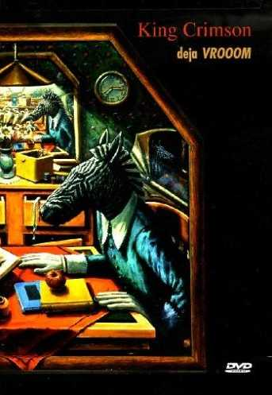
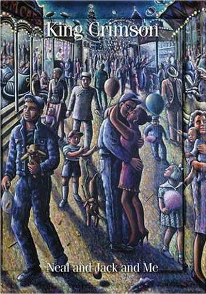
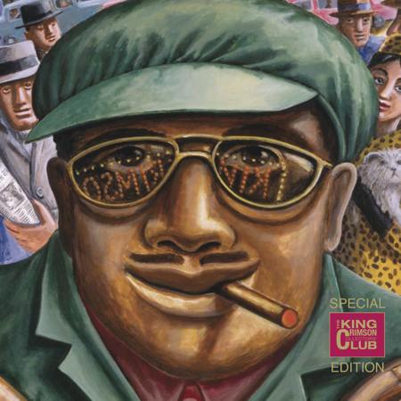
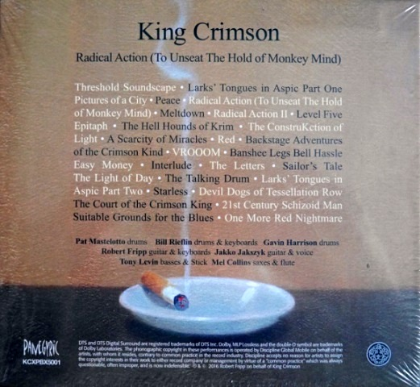
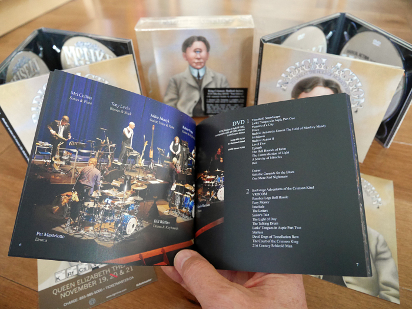

|

|
Deja
Vrooom
(2 discos, 1999)
Grabado en vivo en Tokyo, Japón, 5 y 6 de octubre de 1995,
con la formación
sexteto (Fripp, Belew, Levin, Bruford, Mastelotto, Gunn)
Circular improv - Vrooom vrooom
(#) - Frame
by frame (*) - Dinosaur - One time - Red - B'Boom - Thrak - Matte kudasai
Plus: historia y discografía del
grupo
Three of a
perfect pair (*) - Vrooom - Coda:Marine 475 - Sex sleep eat drink dream - Two sticks
- Elephant
talk - Indiscipline (*) - Talking drum - Larks' tongues in aspic II - People (*) - Walking on air
Plus: videos hechos por Tony
Levin
(#): con 7 ángulos de cámara (uno normal, y uno para cada
miembro del grupo, resaltándose el sonido de su ejecución).
(*): con 2 ángulos de cámara.
|
|

|
Eyes
wide open
(2 discos, 2003)
Grabado en vivo con la formación cuarteto (Fripp,
Gunn, Belew, Mastelotto).
Introductory
soundscapes - The power to
believe I - Level five - ProzaKc blues - The construKction of light - Happy with... -
Elektrik - One time - Facts of
life - The power to believe II - Dangerous curves - Larks' tongues in aspic IV - The deception of the
thrush - The world's my oyster
soup...
Into the frying
pan - The
construKction of light - Vrooom - Heaven and Earth - One time - Blasticus SS Blastica
(improv) - Dinosaur - The world's my oyster soup... - C Blasticum (improv) -
Cage - ProzaKc blues - Larks' tongues in aspic IV - Three of a perfect pair - The deception of
the thrush - Sex sleep eat drink dream - Heroes
Plus:
improvisaciones realizadas en diferentes ciudades de Europa durante la
gira de 2000
|
|

|
Neal and
Jack and Me
(2004)
Grabado en vivo con la formación de los '80 (Fripp,
Belew, Bruford, Levin)
Three of a perfect
pair - No warning - Larks' tongues in aspic III - Thela Hun Ginjeet - Frame by
frame - Matte kudasai - Industry - Dig me - Indiscipline - Satori in Tangier - Man with an open heart
- Waiting man - Sleepless - Larks' tongues in aspic
II - Elephant talk - Heartbeat
Waiting man - Matte kudasai - The sheltering sky - Neal and
Jack and me - Indiscipline - Heartbeat - Larks' tongues in aspic II
|
 |
Live
in Argentina (King Crimson Collectors Club nº 47)
(2 discos, 2012)
Grabado en vivo en Teatro Broadway, Buenos Aires, el 8 de
octubre de 1994, con la formación
sexteto (Fripp, Belew, Levin, Bruford, Mastelotto, Gunn).
El disco 1 muestra la
primera función, y el disco 2 la segunda (detalle en imagen más abajo).
|
 |
Desde octubre de 2009, y como parte de las celebraciones del 40 aniversario
de la banda, DGM edita DVD's con nueva mezcla estéreo y otra de sonido
envolvente 5.1 de los discos en estudio, con bonus tracks de tomas alternativas
o temas inéditos, y en algunos casos con videos de la
formación que grabó el disco en cuestión. Los primeros en editarse fueron
"In the court of the Crimson King", "Lizard" y
"Red". Luego siguieron "In the wake of Poseidon",
"Islands", "Starless and bible black", "Discipline"
y "Larks' tongues in aspic". Más tarde "Thrak", "Beat"
y "Three of a perfect
pair".
|
|

|
Radical Action (to
Unseat The Hold of Monkey Mind)
(2 discos, 2016; son parte de la caja multi-disco del
mismo nombre)
Grabación en vivo en Japón en diciembre de 2015 con la formación
septeto (Fripp, Collins, Jakszyk, Levin, Garrison, Mastelotto, Rieflin)
Threshold Soundscape - Larks' Tongues in Aspic Part One - Pictures
of a City - Peace
Radical Action (to Unseat The Hold of Monkey Mind) - Meltdown -
Radical Action II
Level Five - Epitaph -The Hell Hounds of Krim - The
ConstruKction of Light
A Scarcity of Miracles - Red - Suitable Grounds for the Blues -
One More Red Nightmare
VROOOM - Banshee Legs Bell Hassle - Easy Money - Interlude -
The Letters - Sailor's Tale
The Light of Day - The Talking Drum - Larks' Tongues in Aspic
Part Two - Starless
Devil Dogs of Tessellation Row - The Court of the Crimson King -
21st Century Schizoid Man
|

|

|
|
 DVD's
DVD's